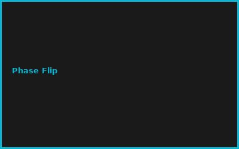
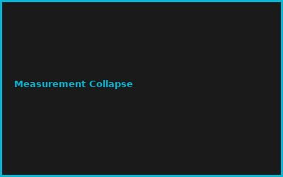
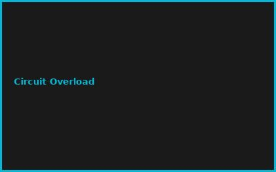
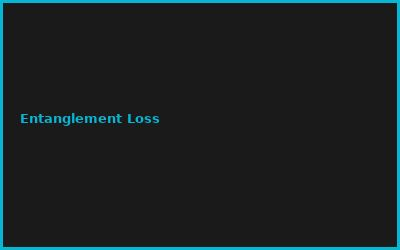

Kapitel 1: Qubit Fundamentals
- Bloch Sphere Representation
- Superposition & Entanglement
- Measurement Postulate
- Quantum State Tomography
Kapitel 2: Single-Qubit Gates
# Quantum Gate Matrices
# Pauli Gates (X, Y, Z)
# Hadamard & Phase Gates
import numpy as np
H = 1/np.sqrt(2) * np.array([[1, 1], [1, -1]])
X = np.array([[0, 1], [1, 0]]) # NOT gate
Kapitel 3: Multi-Qubit Gates
- CNOT (Controlled-NOT)
- CCNOT (Toffoli)
- SWAP & CZ Gates
- Entangling Operations
Kapitel 4: Quantum Circuits
- Circuit Composition
- Quantum Algorithm Implementation
- Deutsch-Jozsa Algorithm
- Grover's Search Algorithm
Kapitel 5: Error Mitigation
- Quantum Error Correction Codes
- Noise Models & Simulation
- Fidelity Measurements
- Readout Error Calibration
Kapitel 6: Advanced Algorithms
- VQE (Variational Quantum Eigensolver)
- QAOA (Quantum Approximate Optimization)
- HHL Linear System Solver
- Quantum Machine Learning
💡 PRO-TIPPS
🎯 Tipp: Qiskit mit Simulator starten
Problem: IBMQ Hardware = Warteschlange | Lösung: Lokaler Simulator = sofort
💰 BUDGET-HACKS (100% KOSTENLOS!)
💰 Hack: Qiskit OpenSource
Original: Quantum Simulator Access: €0-5K | Hack: Qiskit (Free): €0 | Einsparnis: 100%
⚠️ FEHLER
❌ Fehler: Falsche Gate Order
Was passiert: Ineffiziente Circuits | ✅ Lösung: Gate Transpilation + Optimization
🌐 COMMUNITY
Qiskit Community, Cirq Forum, IBM Quantum, Quantum Computing Slack
📸 Fehler-Galerie



